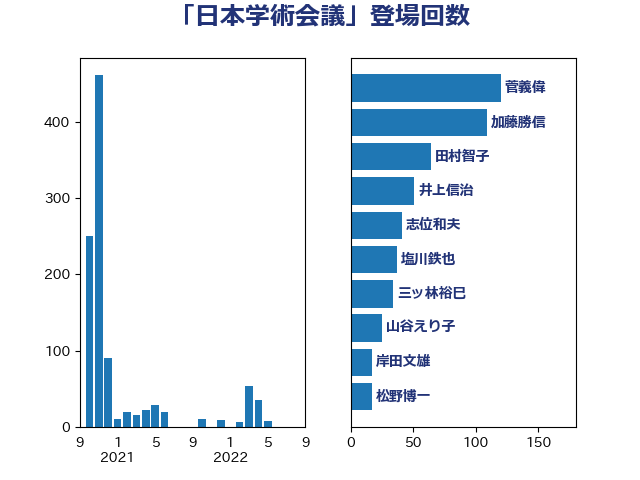

単語「日本学術会議」

| 菅義偉 | 自由民主党 | 120 回 |
| 加藤勝信 | 自由民主党 | 109 回 |
| 田村智子 | 日本共産党 | 64 回 |
| 井上信治 | 自由民主党 | 51 回 |
| 志位和夫 | 日本共産党 | 41 回 |
| 塩川鉄也 | 日本共産党 | 37 回 |
| 三ッ林裕巳 | 自由民主党 | 34 回 |
| 山谷えり子 | 自由民主党 | 25 回 |
| 岸田文雄 | 自由民主党 | 17 回 |
| 松野博一 | 自由民主党 | 17 回 |
| 大塚拓 | 自由民主党 | 16 回 |
| 高木啓 | 自由民主党 | 15 回 |
| 足立康史 | 日本維新の会 | 11 回 |
| 小林鷹之 | 自由民主党 | 10 回 |
| 小池晃 | 日本共産党 | 9 回 |
| 有村治子 | 自由民主党 | 9 回 |
| 柚木道義 | 立憲民主党 | 9 回 |
| 後藤祐一 | 立憲民主党 | 8 回 |
| 菊田真紀子 | 立憲民主党 | 7 回 |
| 蓮舫 | 立憲民主党 | 6 回 |
| 下村博文 | 自由民主党 | 5 回 |
| 山添拓 | 日本共産党 | 5 回 |
| 枝野幸男 | 立憲民主党 | 5 回 |
| 逢坂誠二 | 立憲民主党 | 5 回 |
| 井上哲士 | 日本共産党 | 4 回 |
| 小西洋之 | 立憲民主党 | 4 回 |
| 平木大作 | 公明党 | 4 回 |
| 梶山弘志 | 自由民主党 | 4 回 |
| 福山哲郎 | 立憲民主党 | 4 回 |
| 辻元清美 | 立憲民主党 | 4 回 |
| 中島克仁 | 立憲民主党 | 3 回 |
| 岸真紀子 | 立憲民主党 | 3 回 |
| 木原誠二 | 自由民主党 | 3 回 |
| 本村伸子 | 日本共産党 | 3 回 |
| 森山浩行 | 立憲民主党 | 3 回 |
| 阿部知子 | 立憲民主党 | 3 回 |
| 馬場伸幸 | 日本維新の会 | 3 回 |
| 吉川赳 | 無所属 | 2 回 |
| 吉田統彦 | 立憲民主党 | 2 回 |
| 吉良よし子 | 日本共産党 | 2 回 |
| 坂本祐之輔 | 立憲民主党 | 2 回 |
| 大西健介 | 立憲民主党 | 2 回 |
| 奥野総一郎 | 立憲民主党 | 2 回 |
| 山下芳生 | 日本共産党 | 2 回 |
| 森屋宏 | 自由民主党 | 2 回 |
| 田嶋要 | 立憲民主党 | 2 回 |
| 金子恵美 | 立憲民主党 | 2 回 |
| 上川陽子 | 自由民主党 | 1 回 |
| 倉林明子 | 日本共産党 | 1 回 |
| 原口一博 | 立憲民主党 | 1 回 |
| 古川俊治 | 自由民主党 | 1 回 |
| 大串博志 | 立憲民主党 | 1 回 |
| 宮口治子 | 立憲民主党 | 1 回 |
| 宮本岳志 | 日本共産党 | 1 回 |
| 宮本徹 | 日本共産党 | 1 回 |
| 小山展弘 | 立憲民主党 | 1 回 |
| 小川淳也 | 立憲民主党 | 1 回 |
| 山本香苗 | 公明党 | 1 回 |
| 岩渕友 | 日本共産党 | 1 回 |
| 斎藤嘉隆 | 立憲民主党 | 1 回 |
| 杉尾秀哉 | 立憲民主党 | 1 回 |
| 森本真治 | 立憲民主党 | 1 回 |
| 泉健太 | 立憲民主党 | 1 回 |
| 田村貴昭 | 日本共産党 | 1 回 |
| 磯崎仁彦 | 自由民主党 | 1 回 |
| 福島みずほ | 社会民主党 | 1 回 |
| 篠原孝 | 立憲民主党 | 1 回 |
| 義家弘介 | 自由民主党 | 1 回 |
| 薗浦健太郎 | 自由民主党 | 1 回 |
| 金田勝年 | 自由民主党 | 1 回 |
| 長峯誠 | 自由民主党 | 1 回 |
| 青山繁晴 | 自由民主党 | 1 回 |